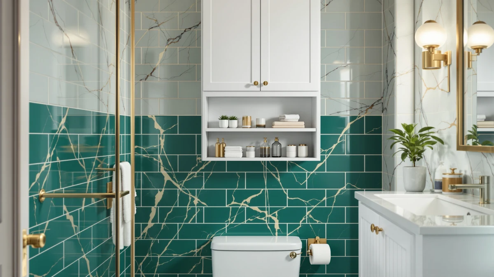

VASAGLE Over the Toilet Review (2026): Worth It?
Prices and picks verified as of October 2026. Independent, reader-supported reviews.


Quick Answer
The VASAGLE cabinet is the strongest pick for most bathrooms in this comparison because it combines an enclosed cabinet with an adjustable shelf and a metal-reinforced frame at a mid-range price. It costs more than the Delamu or Kalrin alternatives below, but it hides clutter behind doors instead of leaving it on an open shelf.
Our pick: VASAGLE Over the Toilet Storage — $76.49 Check Price on Amazon
Bottom line: our top pick is the VASAGLE Over the Toilet Storage Cabinet at $76.49.
Things to Know Before You Buy
- Over-the-toilet units need the right fit. The VASAGLE cabinet is built for toilets without a wide side tank, so measure your tank width and the clearance above the lid before you order.
- Material matters more than paint color. VASAGLE's cabinet mixes a metal frame with wood-look paneling, while the Kalrin alternative relies on particleboard shelving supported by a metal X-frame.
- Anti-tip hardware is not optional above a toilet. Confirm that wall-fixing brackets or straps are included, since a top-heavy cabinet near a toilet is a real fall risk for kids and pets.
- Price spreads widely in this category. The four options in this vasagle over the toilet review range from $49.99 to $76.49, and the gap usually buys enclosed storage instead of open shelving.
- Assembly runs 30 to 60 minutes for most of these units, based on owner reviews, with particleboard models going together faster than the heavier metal-and-wood cabinet.
This vasagle over the toilet review looks at whether the VASAGLE Over the Toilet Storage Cabinet earns its $76.49 price tag against three other bathroom storage options we compared on specs, materials, and verified owner feedback. Over-the-toilet storage is one of the few upgrades that fits almost any bathroom layout, since it claims vertical space that would otherwise sit empty above the tank. The question is whether an enclosed farmhouse-style cabinet beats a cheaper open rack or an under-sink organizer for the same job.
We based this comparison on the specs and features each manufacturer publishes, current Amazon pricing, and patterns we found across verified buyer reviews, not on hands-on use in our own bathrooms. That research-first approach surfaces the same tradeoffs a careful shopper would find by reading twenty listings instead of one, and it lets us flag where a cheaper alternative covers the same need. Four products made the cut for this vasagle over the toilet review: the VASAGLE cabinet itself, a second freestanding VASAGLE cabinet, a Delamu under-sink organizer, and a Kalrin open-shelf rack. Each one targets the same general problem, a cluttered small bathroom, from a different angle and a different price point.
Why You Should Trust Us
Best Bathroom Storage is run by Ilane Tall, who has spent the past several years tracking bathroom organization products on Amazon by comparing spec sheets, pricing history, and owner feedback rather than running a private testing lab. For this vasagle over the toilet review, we cross-checked VASAGLE's published dimensions and materials against the Kalrin rack, the Delamu organizer, and the second VASAGLE cabinet listed below, and we read through verified buyer reviews for recurring complaints about stability, fit, and hardware quality. We do not accept free products in exchange for placement, and every price listed here reflects what Amazon showed at the time of publishing. When a listing's specs were vague about weight capacity or wall-mounting hardware, we noted that gap rather than filling it in with a guess.
How We Compared
We did not install any of these units in a bathroom ourselves. Instead, we built this vasagle over the toilet review by comparing the manufacturer specs for materials, weight capacity, and clearance across all four products, then checking how those numbers line up with what verified owners report after months of use. For the VASAGLE cabinet, that meant confirming its 23.6 inch width works for toilets without a wide side tank, and reading through buyer feedback on how well the adjustable shelf holds up under daily loading. We treated a complaint raised by multiple reviewers as a stronger signal than a single five-star post, and we weighed price against each unit's stated weight limit rather than ranking by price alone. We also compared each listing's stated dimensions against the actual floor and wall space a typical US bathroom offers above and beside a standard toilet, since a cabinet that looks compact in a product photo can still crowd a narrow room.
Overview & Specs

VASAGLE Over the Toilet Storage
What we like
- Enclosed cabinet with doors keeps toilet paper and cleaning supplies out of sight
- Adjustable interior shelf fits taller bottles or stacks of folded towels
- Metal frame under the wood-look panels, built for a 23.6 inch clearance above toilets without a wide side tank
Flaws but not dealbreakers
- At $76.49 it costs roughly 53 percent more than the Kalrin or Delamu alternatives below
- Rustic White farmhouse styling will not match every bathroom's existing fixtures
- Doors mean you lose the at-a-glance access that open shelving gives you
| Material | Metal / wood |
| Size | Without side storage(23.6") |
The VASAGLE Over the Toilet Storage Cabinet comes from the brand's LIRY collection, which leans into farmhouse details like a rustic white finish and visible wood grain on the door panels. Underneath that styling, the frame is metal, which is what lets the cabinet carry weight above the toilet without the sag you sometimes see in particleboard-only units. At 23.6 inches wide and built for toilets without a wide side tank, it fits a narrower footprint than cabinets designed with side storage wings. The doors swing on a standard hinge rather than sliding, so you need a few inches of clearance in front of the toilet to open them fully, which is worth checking in a tight half-bath before you buy.
Inside, a single adjustable shelf lets you split the cabinet into two zones, which matters if you are storing a mix of tall cleaning bottles and shorter stacks of toilet paper or towels. In this vasagle over the toilet review, that adjustability is the main functional edge over the open-shelf Kalrin rack: everything sits behind doors, so a half-used bottle of toilet bowl cleaner is not on display each time you walk past. The tradeoff is price. At $76.49, this cabinet costs noticeably more than either the Kalrin or Delamu options below, and you are paying for enclosed storage and the metal-reinforced frame rather than for extra capacity. Buyers comparing the two VASAGLE cabinets in this review should note that this one mounts above the toilet while the other sits on the floor, so the choice often comes down to whether your bathroom has open floor space to spare.
What We Liked
Owners who left verified reviews consistently note that the adjustable shelf is the feature they use most, since it lets them reconfigure the cabinet as their storage needs shift between seasons. Reviewers also point to the metal frame as a meaningful upgrade over all-particleboard competitors, saying it feels steadier when the doors open and close repeatedly. The rustic white finish shows up often in buyer photos paired with farmhouse or cottage-style bathrooms, which tracks with VASAGLE's LIRY collection branding. For a bathroom where counter and under-sink space is already full, hiding supplies above the toilet behind real doors, instead of on an open rack, is the main draw buyers describe in this vasagle over the toilet review. A handful of reviewers also mention that the farmhouse-style door panels hide fingerprints and water spots better than the painted particleboard on some competing racks, which matters in a bathroom that gets daily use.
What Could Be Better
The price is the first drawback worth naming directly. At $76.49, the VASAGLE cabinet costs about 53 percent more than either the Kalrin over-the-toilet rack or the Delamu under-sink organizer, both priced at $49.99, so you need the enclosed storage to justify the gap. Some verified reviewers also mention that the included hardware runs light for a unit this tall, and recommend adding your own wall anchor regardless of what ships in the box. Because the cabinet has doors instead of open shelves, you also lose the quick inventory check that a rack like the Kalrin gives you. If your bathroom gets heavy daily traffic from kids, an open shelf might serve you better than a door you have to open every time you need a fresh roll of toilet paper, and that is a real consideration in any vasagle over the toilet review. A few owners also report that the wood-finish panels can show wear faster than the metal frame in bathrooms without a working exhaust fan, so pairing this cabinet with decent ventilation should help it hold up longer.
Who Is It For?
This cabinet makes the most sense if your bathroom already has visible clutter you want hidden, and you are willing to pay more for doors instead of open shelves. It also suits anyone who likes farmhouse or cottage styling, since the rustic white finish and wood grain paneling are a deliberate design choice rather than a neutral default. If your priority is the lowest price or the fastest assembly, the Kalrin or Delamu alternatives below cover the same vertical or under-sink space for about 35 percent less. And if you are short on wall space but have room under the sink, the Delamu pull-out organizer solves a different version of the same clutter problem without touching the area above your toilet at all. Renters who cannot drill into walls should also weigh the Delamu organizer more heavily, since it sits in the under-sink cabinet rather than requiring wall anchors the way both over-the-toilet units do.
Alternatives to Consider
None of these three alternatives match the VASAGLE cabinet's enclosed storage, but each one solves a narrower version of the same problem for less money. We picked them by comparing their specs and verified owner feedback against the pick above in this vasagle over the toilet review.

Editor's Pick
VASAGLE Bathroom Floor Storage Cabinet
VASAGLE's floor cabinet trades the over-the-toilet mount for a freestanding footprint, with two adjustable shelves and a built-in anti-tip kit, at a few dollars less than the pick above.
$67.98
Check Price on Amazon
Best Value
Delamu Under Sink Organizer 2
At $49.99 for a two-pack, the Delamu pull-out organizer solves under-sink clutter instead of over-toilet storage, with five adjustable heights for bottles and cleaning supplies.
$49.99
Check Price on Amazon
Premium Choice
Kalrin Over The Toilet Storage
The Kalrin rack matches the VASAGLE cabinet's over-the-toilet placement at a lower price, with open shelving, a drain basket, and an X-shaped guardrail rated for 30 pounds per tier.
$49.99
Check Price on AmazonFrequently Asked Questions
Is the VASAGLE over-the-toilet storage cabinet worth the price?
Based on verified owner reviews and the materials VASAGLE uses, the cabinet is worth the $76.49 price if you specifically want enclosed storage with an adjustable shelf. If you only need open shelving, the Kalrin alternative in this vasagle over the toilet review covers similar vertical space for about $27 less.
What toilet sizes fit under the VASAGLE cabinet?
VASAGLE lists this cabinet at 23.6 inches wide and designed for toilets without a wide side tank. Measure your tank width and the clearance above the lid before ordering, since cabinets built for narrow tanks will not sit level over a wider one.
Does the VASAGLE over-the-toilet cabinet need to be anchored to the wall?
Yes. Any cabinet mounted above a toilet should be secured with wall anchors or a bracket, and some verified reviewers note the included hardware runs light for a unit this tall. Adding your own wall anchor is a reasonable precaution regardless of what ships in the box.
Final Verdict
The short version of this vasagle over the toilet review: VASAGLE's Over the Toilet Storage Cabinet is the strongest choice for anyone who wants enclosed storage, an adjustable shelf, and a metal-reinforced frame above the toilet, even at a $76.49 price that runs higher than the alternatives here. If that price gap matters more than closed doors, the Kalrin rack or the Delamu under-sink organizer cover similar storage needs for roughly $27 less. For most bathrooms where hidden clutter beats open shelving, VASAGLE remains the pick worth the extra cost.